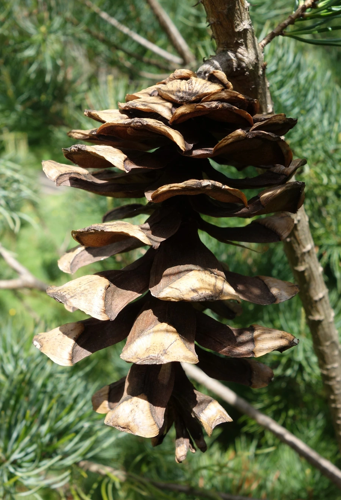

乔木 · 植物界
华南五针松 Pinus kwangtungensis

松科松属常绿乔木，针叶五针一束、粗短而密，是中国特有的山地松树，耐瘠薄抗风，被列为国家二级保护植物。
- 分类
- 门裸子植物门纲松纲目松柏目科松科属松属
- 栖息环境
- 海拔 700–1600 米的山脊、悬崖与石灰岩山地，耐瘠薄抗风
- 地理分布
- 中国广东、广西、湖南、贵州、海南等地，为中国特有
- 保护级别
- 国家二级重点保护野生植物；IUCN 暂无评估
物种志
华南五针松为松科松属常绿乔木，高二十至三十米，树皮灰褐色、呈不规则鳞片状开裂，树冠伞形。针叶五针一束，长五至十二厘米，粗硬，叶鞘早落。雌雄同株，雄球花聚生于新枝基部，雌球花单生或数个生于新枝顶端，花期四至五月；球果圆柱状，成熟时黄褐色，种子具翅，果期翌年十月。
华南五针松是中国特有的山地松树，分布于广东、广西、湖南、贵州、海南等地，多生于海拔七百至一千六百米的山脊、悬崖和石灰岩山地。它喜光、耐瘠薄、抗风，适宜排水良好的酸性或石灰质土壤，在岩石缝隙中也能扎根生长。木材纹理直、结构细，可供建筑和家具用材；树姿苍劲，是制作盆景的优良材料。由于分布区狭窄、天然更新困难，被列为国家二级重点保护野生植物。
形态与习性
- 株高20–30 m，树冠伞形
- 花期4–5 月，雄球花聚生
- 果期翌年 10 月，球果圆柱状
- 光照极喜光，不耐荫蔽
- 水分耐干旱，忌积水
- 土壤酸性或石灰质薄土
- 主要用途建筑用材，桩景与盆景
趣味知识
- 华南五针松五针一束，针叶粗短而密集，是五针松类中最耐瘠薄的种类之一。
- 它常扎根于悬崖石缝，树姿苍劲扭曲，是岭南盆景的重要素材。
- 华南五针松为中国特有，广东南岭一带保存有较完整的天然林。